UDN
Search public documentation:
MatineeTutorial
Interested in the Unreal Engine?
Visit the Unreal Technology site.
Looking for jobs and company info?
Check out the Epic games site.
Questions about support via UDN?
Contact the UDN Staff
Matinee
Document Summary: A comprehensive reference for using the Matinee tool for making in game cinematics. Document Changelog: Last edited by Tom Lin (DemiurgeStudios?) for build 2107. Created by Warren Marshall.Overview
With the Matinee system, you can easily create camera paths for use in your in-game cut scenes and fly bys. Each scene is controlled by a SceneManager actor. This actor holds the set of actions/subactions which will make up the body of the scene. You CAN edit a matinee scene using the regular property editing window but it's far easier if you use the GUI that becomes available when you go into Matinee mode: . This icon is located in the upper section of the toolbar on the left of the screen.GUI Overview
The GUI is the easiest way to create matinee scenes. We'll go into more depth on how to create a scene later on, but for now let's do an overview of the tabs and what purposes they serve.Scenes
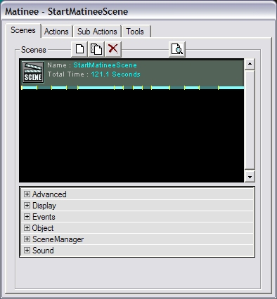
You can create a new scene either by adding a SceneManager actor to the level manually or by clicking the `new' ( ) button on the Scenes tab, which is available once you are in Matinee mode. () Use the button, it's much easier than navigating through the actor browser. The SceneManager actor () will be inserted automatically into your level when you click the `new' button. Once added, you can begin to build your scene.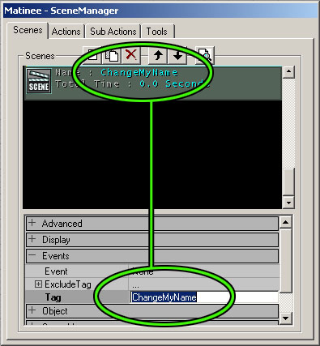
First of all, change the Tag of your scene, which is basically its name. The field to do this is in the `Events' section.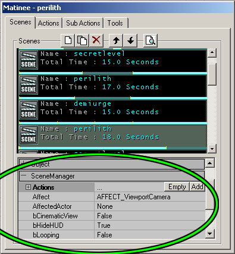
There are a few options to be aware of in the SceneManager. To get to these options, the Matinee mode window must be open. Under the `SceneManager' listing, you will find the following settings: There is a combobox called Affect. This tells matinee what to apply the scene to. You can choose to either have it affect the viewport camera, or another actor in the level. If you want to affect an actor, first set the Affect field to AFFECT_Actor. Then select the actor in your level that you wish to use, and go to the AffectedActor field. Hit the `use' button to set the actor to be used. Some effects don't have any meaning if you're affecting an actor, because they are viewport specific : fades, for example. A very important field is hidden near the bottom of the list, NextSceneTag. If you wish to play two scenes in sequence, this field will activate after one scene finishes playing, to call the next to play. Just put the name of the next scene to play in the field. Note: it is possible to call more than one event to play with the NextSceneTag, if both the events called have the same Tag (the name field inside `Events'). For example, you could have a scene begin playing (a camera affected in the Affect field) and have an object move simultaneously (Affect field set to AFFECT_Actor). Other items to pay attention to are the EventStart and the EventEnd fields. These are set to `NONE' by default. When they are filled in, they send out a message to start the items which are named in the fields, one when the scene begins play and one when it ends. The EventStart is an especially good way to precisely time events, since it will always be based upon the starting time of the SceneManager . Almost self explanatory: to have the scene continuously loop, set bLooping to TRUE. You can also have the screen go into letterbox mode by setting bCinematicView to TRUE. In theory, bHideHUD would hide/unhide the heads-up display (health, etc). It is set to TRUE (hide HUD) by default, but changing it to FALSE seems to have no effect.Time Bar
Across the bottom of each scene in the list is a bar. This bar shows small bars of alternating colors. Each one of those smaller bars represents an action. Looking at this bar, you can get some idea of how your time is split up among your actions.Actions
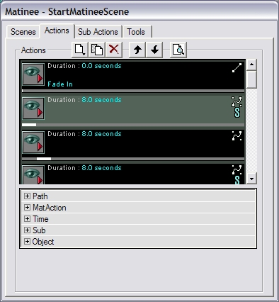
Actions are what drive the scene forward. There are two types of actions. You can choose to either move the camera, or pause the camera. Clicking the new button ( ) will give you a drop down menu of the available types. Choose the one you want and it will be inserted at the current selection location. If you want to rearrange the actions, just click the up and down arrows at the top of the dialog. Note that the order of the actions in the list is very important - the actions are executed, one after the other, from the top down. Also note that the first action in a new scene should always be of the movement type. If a pause type is set as the first action, UnrealEd? will ignore it when it draws paths between interpolation points.Types
Move actions (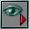
) move the camera from one InterpolationPoint to another. Pause actions (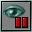
) cause the camera to wait at the current InterpolationPoint for a certain amount of time. ALL actions must have an InterpolationPoint associated with them - moves and pauses alike. (A quick reminder: an InterpolationPoint is one of the three available options on the Tools tab) To do this, select an InterpolationPoint actor in the level and open up the MatAction section of your actions properties. In the IntPoint field, click the Use button. This will assign the InterpolationPoint to that action.Lines
When you have more than one action in your list, you will see lines appearing in the editor viewports, connecting the various InterpolationPoints in the order that you have specified (the order that they appear in the stack of actions). These are generally white. However, the line corresponding to the currently selected action appears in yellow (so you know which one you're editing). As a side note, you can also select actions by clicking their white lines in the editor viewports. A purple line indicates an instant cut ... a camera movement with zero time.Time
Another important field for actions is Duration, which you will find under the Time section. This specifies how long the action should take, in seconds. This is either how long the camera should take to move to this InterpolationPoint, or how long it should pause.Path Style
By default, paths between InterpolationPoints are linear, but you can easily change that by going into the Path section and changing the PathStyle to PATHSTYLE_bezier. When you do this, the path will instantly change to be an S curve and it will gain control handles. Dragging these handles around will change the shape of the path. This can be done in any viewport, although the 2D viewports are generally the easiest to work with.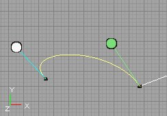
If a bezier action connects to another bezier action, the connection will be forced to be smooth (by default). Moving the control handles on the one path will affect the shape of the other one, so make sure you are paying attention to the entire shape you are editing, not just the section you are grabbing. See below: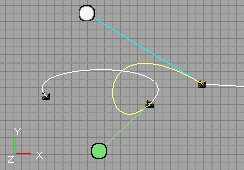
If you don't want this to happen, go under the Path section and set bSmoothCorner to FALSE. This will allow sharp corners between bezier actions. See below: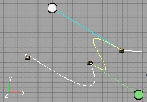
Special Graphics
On the right side of each action are a couple of symbols. The one on top specifies what style of path the action uses (linear or bezier). There is also an optional "S" which can appear ... this appears if the action has subactions that belong to it. This is so you can tell at a glance which actions have subactions and which ones don't.Time Bar
Across the bottom of each action is a dark grey bar. This bar represents the total scene time. The white bar on top of it shows where that action starts and stops relative to the overall scene. This lets you see at a glance which actions are taking the most time.SubActions
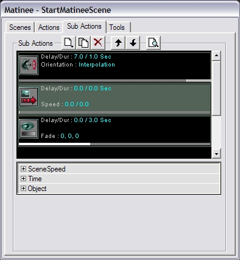
SubActions are where the effects are done. Everything from fades to triggers is handled by subactions. This is also where you control changes in the camera orientation. The basic UI is identical to how actions work.Time
Time works a little differently for subactions. Delay tells the subaction how long to wait until it starts executing and the Duration tells it how long to execute once it gets going. What's important to remember is that these times are relative to the owning action. So if you specify a 3 second delay, that's 3 seconds after the owning action starts executing. This is a little confusing at first but it does make sense. I promise.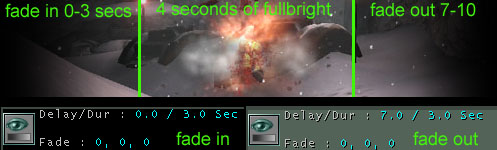
Here is an example. First of all, keep in mind that a single action can have more than one subaction. So, if you wanted your action to fade in, and then fade out, that would take two different subactions. The first subaction (fade in) would have a Delay of 0, since we want it to start immediately. Then, say we make the fade in Duration last 3 seconds. The second subaction (fade out) should have a Delay of at least 3, since the scene is still fading in, in those first 3 seconds. In the picture above, the delay is set to 7, which means that it will have 4 seconds of full brightness before fading out. Then it fades out for 3 more seconds, for a total of 10. Get it? Some subactions have effects which can build up over time, like fades or changing the scene speed. This is controlled by the Duration field. The effect will build over the Duration time. So if you want to fade to black slowly over 5 seconds, set your duration to 5 seconds.Types
There are quite a few subaction types. We'll go over them here.Scene Speed
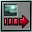
Controls how fast the scene will execute. This is independent of the game speed. Can be used for neat effects where you move the camera really quickly suddenly or slow to a crawl within a single action. Note that this does not affect anything besides the scene (usually the camera). Meaning, it doesn't make the scene events any faster, just the motion of your set cameras. I've had the most luck with using at least two or three of these subactions within a single action; one to ramp up (or down) the speed from normal, one to continue the altered camera movement, and one to return back to a normal camera speed. The Min and Max fields are named poorly. The Min indicates how fast the camera speed will be at the start of the subaction execution (1 by default) and the Max field shows how fast the subaction will leave the camera speed when it finishes. Under the Time section there is a Duration field. Have this field filled out with the appropriate value, so that UnrealEd knows when to start increasing your camera speed.Game Speed
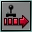
This allows you to control the overall game speed speed. This has the same affect as the slomo command. i.e., `slomo 5' makes the game run 5x faster, and 0.2 would be 1/5th as fast. The GameSpeed has the same silly Min and Max fields as SceneSpeed. Set the Min field to the starting speed value (1 by default) and the Max to the ending value. Again, I prefer to use more than one GameSpeed subaction at once, so that I can change the game speed away from the norm, and then back.Orientation
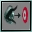
This is what you use to change where the camera looks when moving through the scene. There are several options here:None
The camera will not change from its current direction.Look At Actor
The camera will look directly at a specific actor. You specify which actor to look at in the LookAt field. The bullseye actor (Look Target) provided in the Tools tab is perfect for this task.Face Path
The camera will look in the direction it's moving.Interpolate
The camera will interpolate between the rotations of the InterpolationPoints at either end of the current action. An important field here is EaseInTime. This is how long you want the camera to take when changing to this new orientation. If this didn't exist, the camera would instantly snap to the new orientation. Instead, the camera will smoothly interpolate between the old orientation and the new one over the time you specify in this field. If you find that the camera is turning the "wrong way" when you change orientations, you can tell it to turn the other way by setting the appropriate bReverse field to 1.Camera Shake
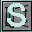
This allows you to, what else, shake the camera in a matinee movie. This has slightly different sets of options, but they follow the same formula we've been seeing. Under the section Shake there are three variables, X, Y and Z; each of these also have Min and Max fields. So, shaking upon independent axes is possible, for independent lengths of time. Make sure to set a Duration for your shaking, as well, in the Time rollout. Shake shake shake!FOV
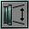
This allows you to smoothly change the camera's FOV for effects like zooming. The Min is the start value, and Max is the ending value. The normal FOV for standard gameplay is 85. Anything lower than this will reduce the visible area to the player, and make faraway objects look closer. A higher FOV will make close objects look far away, and things that are on the periphery of the screen will look stretched out. The highest FOV possible is 170-180 or so, after that there appears to be no change.Trigger
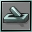
Will trigger an event. Useful for precisely timing explosions, triggering dialogs, scripted sequences, etc.Fade
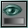
Fades to and from colors. The FadeColor is selectable from within the Fade section. Default color is set to black. Note that the `fade in' and `fade out' are both contained within this tool. Under the Fade section, bFadeOut can be set to true or false. If false, it will fade in. Also, take care that when using a fade out, the Delay field is set appropriately in the Time section. It is quite possible to fade out in the middle of a scene, and then have the scene pop back to full brightness immediately after.Camera Effect
This will add an effect - there are two options:Camera Overlay
This will give you the option of overlaying a texture over the view. The texture you assign to OverlayMaterial will be overlayed. Masking works as normal. It is possible to overlay a color on top of your texture as well. Unfortunately, this tool seems somewhat broken. The alpha for the overlay color does not seem to work, your chosen overlay color will appear at full alpha. Also, the alpha control for the texture is similarly broken. Currently, it works binarily - on or off. The alpha information that is in the texture itself seems to register correctly, so if a translucent overlay is needed, then simply encode the desired amount of alpha into your texture. The drawback is the inability to dynamically change this from within the editor, but functionally it is sound.Motion Blur
This will add a motion blur to your scene. BlurAlpha will set how pronounced the motion blur is. For lots of blur, set the value to 0. No blur is 255. There are StartAlpha and EndAlpha fields, which determine how much of the blur will be shown at the beginning and end of the subaction. Speaking of which, the Duration tells the editor how long you want the blur to last, and the field DisableAfterDuration will either turn off the blur after your allotted time, or leave the blur on. NOTE: These effects do not appear in the Matinee preview window - you have to run your scene in the game to see the effects.Time Bar
This is similar to the time bar on the actions tab except that now the bar represents the time taken by the action which owns this subaction. The white bar represents when this subaction starts and stops within the owning action.Tools
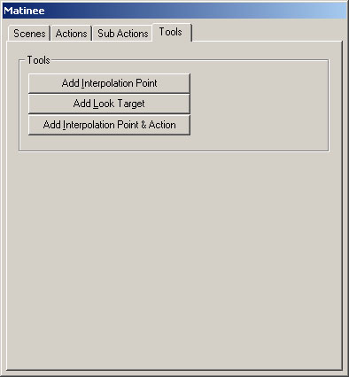
This tab is very simple, but the tools it offers are extremely helpful. You have buttons here to add InterpolationPoints or LookTargets. The actors will be added at the current camera position and use the current camera rotation.InterpolationPoints
InterpolationPoints are simply destinations for the camera to move to. They don't have any special fields within them. They simply represent a location and an optional rotation (depending on the current camera orientation being used).LookTargets
A LookTarget actor is a convenience actor. It looks like a little bullseye that you can place in the level to give the camera something to look at.Interpolation Point & Actor
This third option allows the placement of an InterpolationPoint into the scene, combined with the creation of an action in the scene. This actor will be bound with the InterpolationPoint already, so that it's not necessary to assign the point to the action (in the Actions - MatAction - IntPoint field).Preview Window
Clicking the preview button (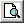
) on any tab will bring up the preview window for the currently selected scene. This window allows you to see the scene as it will play out in the engine. Well, not exactly but it does the best it can. It can't show things like other actors moving and it won't actually trigger any events, but it shows you a close representation of what the scene will play out like.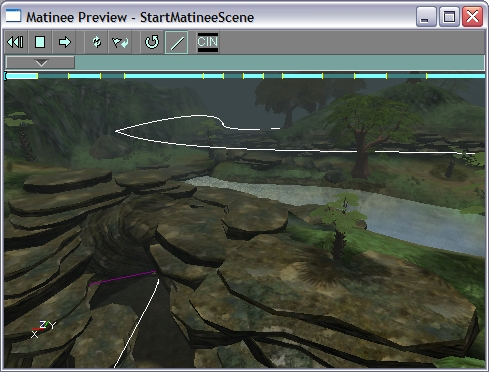
Time Scrubber
To move through the scene quickly, you can drag the time scrubber control (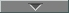
). As you drag this control, the viewport will update to show you how the camera would be affected at that spot. It's probably easier to just do it than to read about it. You can move the camera around normally if you want to, but no keys will respond in this viewport. This is because the preview viewport is for looking and not touching.Toolbar
If you click the play button (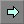
), the scene will start playing from wherever the time scrubber is. This allows you to play the same part of a scene over and over to fine tune it. The buttons near the play buttons are for stopping the playback and for jumping back to the start of the scene. The next set of buttons are the refresh (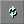
) and the reset (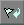
) button. Refresh will recomputed all the path data in case the preview window gets out of sync with the data in the SceneManager. Reset removes all effects from the viewport camera. This is useful if you stop dragging the scrubber halfway through a fade or something. Next are buttons which let you toggle the visibility of the path rotations and lines. Currently, rotations never show up but will in a future version. The last button lets you toggle the cinematic view so you can see what it looks like. If you want to use it for real, set bCinematicView to TRUE in the SceneManagers properties.